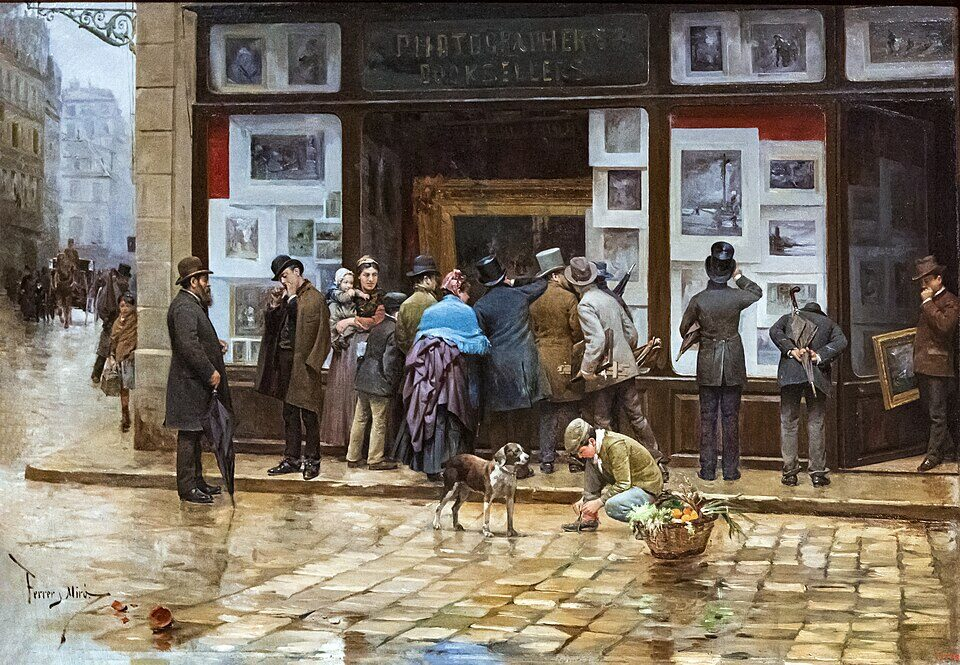

C1 · Society
The Text
Play the audio and follow along, then read it again on your own. Hover over a highlighted word to see what it means.
Listen & Read
The Attention Economy
How platforms engineered for engagement have changed the way we read, argue and decide what is true.
In the last two decades, the way people consume information has changed more radically than at any other moment in modern history. Digital platforms are no longer neutral tools for communication; they are carefully engineered environments designed to capture and retain attention. This phenomenon, often described as the attention economy, has become one of the most pressing challenges of contemporary society.
At the center of the issue is the monetization of human focus. Social media feeds, video platforms and news aggregators rely on algorithms that prioritize engagement over accuracy, depth or long-term value. Users are therefore exposed, continuously, to content optimized to provoke an emotional reaction — outrage, fear, instant gratification — rather than reflection or critical analysis. Over time, that constant stimulation reshapes cognitive habits, and sustained concentration becomes progressively harder to summon.

One significant consequence is the decline of deep reading and complex reasoning. Lengthy texts, nuanced arguments and ambiguous ideas demand patience and mental effort. In an environment dominated by short videos, headlines and notifications, that effort comes to feel unnatural. Many people report difficulty finishing books, following long discussions, or engaging at all with ideas that cannot be immediately summarized or consumed.
The shift has social and political implications as well. When public debate is reduced to slogans and fragments, complex problems get framed as simplistic conflicts. Misinformation spreads more easily — not necessarily because people believe it blindly, but because the speed of consumption leaves little room for verification or skepticism. In this sense the attention economy does not merely distract. It subtly alters how truth itself is evaluated.
Addressing the problem does not require rejecting technology altogether, but rather redefining the relationship between users and digital systems. Media literacy, ethical platform design and deliberate habits of slow thinking are the essential responses. Without them, society risks trading depth for immediacy, and understanding for constant stimulation.
Vocabulary
- to engineer — to design something deliberately to produce a particular result
- to retain — to keep hold of something that might otherwise be lost
- pressing — urgent; demanding attention now rather than later
- to prioritize — to treat one thing as more important than another
- sustained — continued without interruption over a long period
- to summon — to call up an effort or a quality from within yourself
- nuanced — containing fine distinctions rather than simple oppositions
- to frame — to present something in a way that shapes how it is understood
- media literacy — the ability to judge how media is made, funded and intended to affect you
- immediacy — the quality of happening or being available at once
- to reshape — to change the form of something already established
- to leave room for — to allow enough time or space for something to happen
Interactive Exercises
Practice
Complete each exercise, then click Submit to see your score and an explanation for every answer.
Speaking & Writing
Discussion
There are no right answers here — use these to practice speaking, or write a short answer to each.
- The writer says the problem is not belief but speed. Test that against your own experience: when you last shared something, how long had you had it?
- “Ethical platform design” places an obligation on the designer. Is that realistic when engagement is what the business is paid for?
- Is the decline in deep reading a genuine loss, or nostalgia for a way of reading that was never as common as we imagine?
- The text was written about digital platforms. Which of its arguments, if any, applied equally to television or to the newspaper?
- Write about 250 words arguing either for or against the claim that the attention economy “alters how truth is evaluated”. Address the strongest objection to your own position.